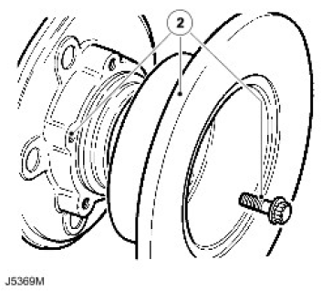
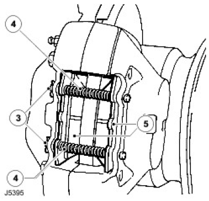
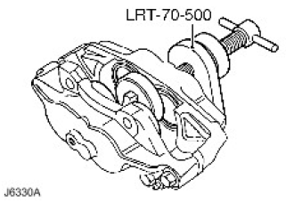
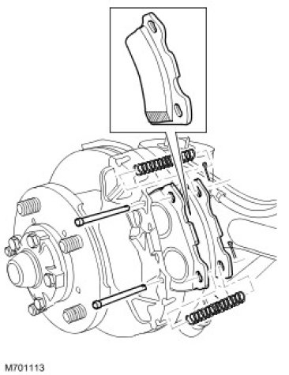
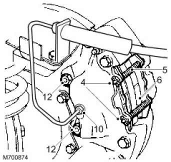

WARNING: Support on safety stands.
WARNING: Support on safety stands.
For additional information, refer to Front Wheel Bearing and Wheel Hub (60.25.14).

For additional information, refer to Front Wheel Bearing and Wheel Hub (60.25.14).



For additional information, refer to [relevant section].
WARNING: Support on safety stands.

WARNING: Do not separate caliper halves.
For additional information, refer to Brake System Bleeding (70.25.02).